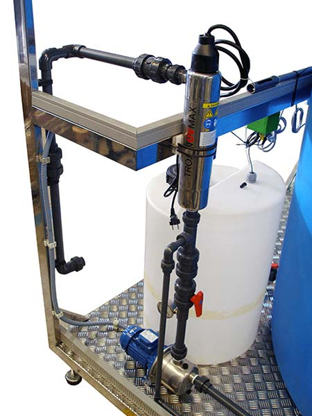
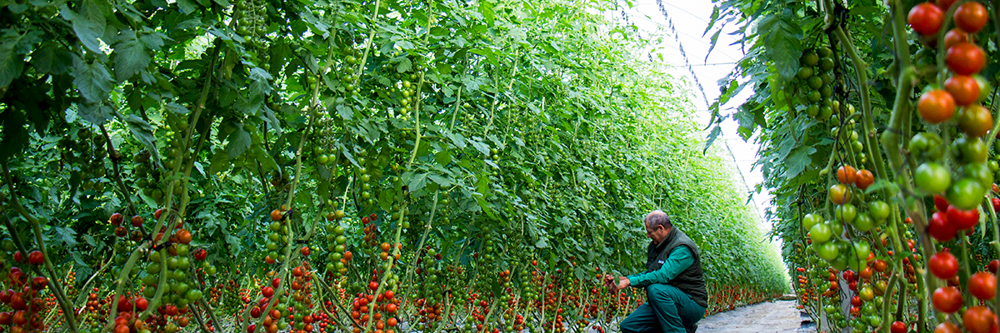
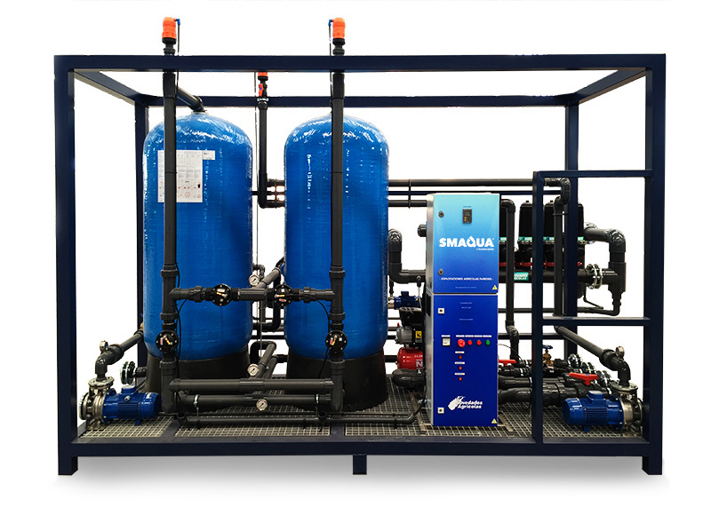
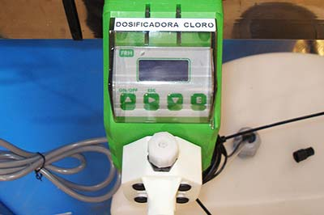

Tratamiento Ultravioleta
Distintos patógenos están presentes en el agua de riego (bacterias, virus, nemátodos) y son causantes de distintas enfermedades muy graves en personas humanas así como animales y vegetales, la desinfección está recomendada para prevenir su transmisión y dispersión a través de este medio.
Nuestro departamento técnico le puede ofrecer la mejor solución para poder reutilizar el drenaje de su cultivo sin suelo, reutilizar aguas residuales de procesos humanos e industriales, evitar los problemas de transmisión de enfermedades vía agua de riego, adecuar sanitariamente el agua para su utilización en procesos de lavado de frutas y hortalizas, uso sanitario, etc.

Es un eficaz sistema de desinfección del agua de riego basado en el principio físico germicida de la radiación ultravioleta (UV-C). Un preciso dimensionado del proceso permite tratar desde bacterias y nemátodos, hasta virus, con una completa efectividad.
Su uso está recomendado para la reutilización del agua de drenaje y la potabilización para consumo humano.
El sistema dispone de los siguientes elementos:
- Filtrado de baja velocidad mediante lecho de arena.
- Cámara con lámpara de radiación UV de baja presión.
- Sensor de intensidad de radiación UV.
- Sistema de limpieza de la lámpara con equipo de dosificación de ácido.
- Circuito para control de la producción y limpieza de la lámpara de UV.
Tratamiento por Ozono

El desinfectante más eficaz y potente después del fluor.
Destruye e inactiva las enzimas de los microorganismos, oxida la pared celular rompiéndola y atacando los ácidos nucleicos ADN y ARN, y esa es la razón de su poder bactericida. Hay que producirlo insitu. Actúa rápido y eficazmente.
Qué es el OZONOEl ozono es una variedad alotrópica del oxigeno, su molécula triatomica O3 genera por la activación de la molecúla diatomica O2 del oxigeno. La inyección del Ozono en el agua se realiza por aspiración a través de un venturi, y su inyección en un reactor o cámara de mezcla durante el tiempo necesario para la acción oxidante.

Tratamiento por Ozono
El ozono (O3) se produce tras la recombinación de átomos de oxígeno disociados de su estado original (molécula O2) con otras moléculas de oxígeno, obteniéndose así un gas inestable que se utiliza por su elevado poder oxidante para la desinfección de aguas, aire y espacios cerrados. Un adecuado sistema de monitorización de la producción, dosificación, dispersión y reacción, permiten una desinfección altamente eficaz contra todo tipo de microorganismos y virus.
Ventajas del Tratamiento SMAQUA Ozono en Agricultura
- Raíces más fuertes y sanas.
- Plantas más vigorosas.
- Alargamiento del ciclo de cultivo.
- Potencia el crecimiento y da precicidad al cultivo.
- Incremento de la cantidad de azúcares.
- Incremento de producciones y calidad de frutos.
- Acción germicida directa sobre hongos, bacterias y virus.
Componentes de una Planta de OZONOEl equipo de fabricación complacta SMAQUA Ozono dispone de los siguientes elementos:
- Generador de ozono, el fundamento de la producción se obtiene mediante la descarga de corriente en un reactor a alto voltaje, conformado por placas dieléctricas de descarga a través de las que circula el gas que suministra el oxígeno.
- Inyector de Ozono: Dosificación con inyectores o bombas soplantes con difusores.
- Tanque de reacción.
- Bomba de recirculación.
- Sistema de monitoreo de la dosificación, controlador ORP, alarmas, tiempo de funcionamiento, etc.
- Filtrado de baja velocidad mediante lecho de arena con contralavado
- Filtrado del aire de alimentación (caso de utilización de aire atmosférico como fuente de oxígeno).
Aplicación del Tratamiento de OZONO
- Desinfección de agua de drenaje en cultivos hidropónicos.
- Desinfección de agua de riego.
- Ozonización del agua de riego por goteo.
- Tratamiento de las algas de embalses.
- Ozono-solarización en suelo de invernaderos.
Equipos de Cloración

La utilización de cloro como tratamiento de desinfección del agua es el método más ampliamente empleado por su tradición y coste.
El hecho de disponer de un remanente posterior al tratamiento inicial posibilita contar con un indicador de un correcto tratamiento y con un medio de prolongar la efectividad del mismo.
Un simple monitoreo mediante una determinación colorimétrica, permite la fácil determinación de la presencia de cloro libre en el agua.